Links and Webrings
Note: Just because a website is linked here does not mean that I fully agree with everything on their page. I add websites in good faith, but please let me know if any of the sites linked have bigoted or hateful content.
My Links
- Neocities Profile
- VGen (Commissions)
- Personal Tumblr
- Art Tumblr
- Bluesky
- Misskey
- DeviantArt (Inactive)
Bookmarks
- W3Schools
- Portfiend's Eleventy Setup
- Flamed Fury's 11ty Guide
- Derek Kedziroa's Dark Mode
- sadgrl.online Guides
- PX to REM Calculator
- Custom Scrollbar Maker
- Eleventy Blog Set-up Guide
Websites

 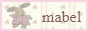
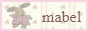


 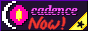
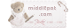
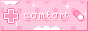
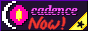
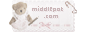
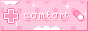


 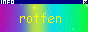
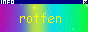
 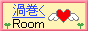
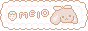
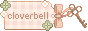
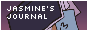
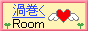
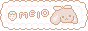
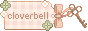
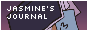


Webrings
I was apart of the old Yesterweb Ring and the Vocaloid V1 webring. Both of which have closed.